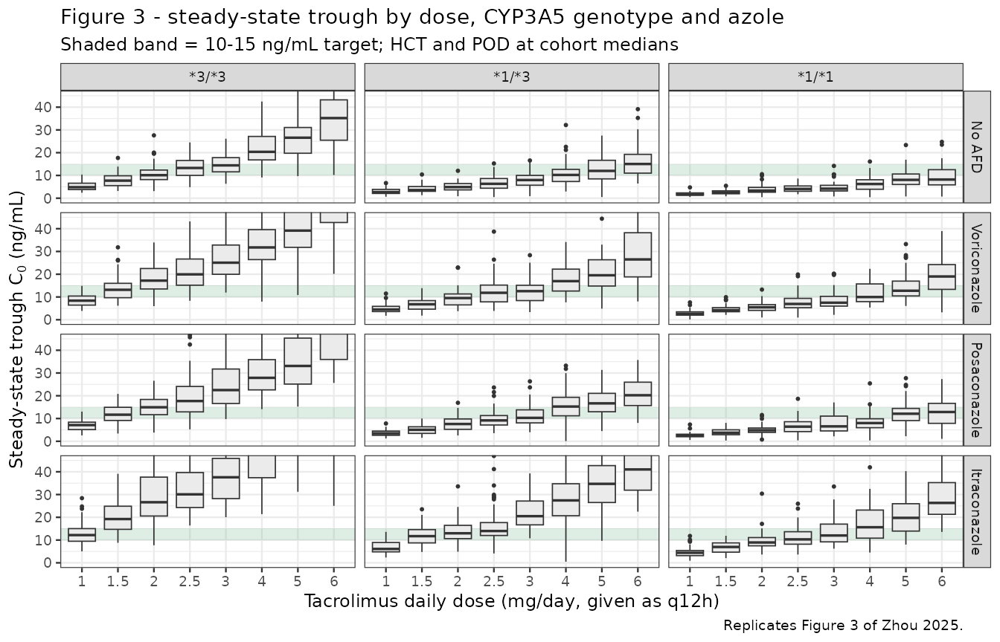
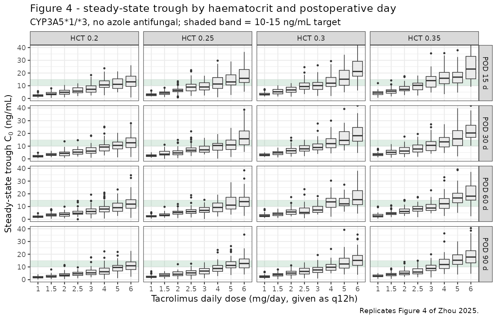

Model and source
ui <- rxode2::rxode(readModelDb("Zhou_2025_tacrolimus"))
#> ℹ parameter labels from comments will be replaced by 'label()'
# Every solve in this vignette goes through this wrapper so the solver choice
# is made once, consistently.
#
# `method = "dop853"` is load-bearing, not cosmetic. The large IIV on Vd/F
# (omega^2 = 0.80, i.e. 111% CV) gives a minority of simulated subjects a small
# Vd/F and hence a large kel = CL/Vd, which makes the system stiff for the
# default lsoda solver. Those subjects fail with "excess work done on this
# call" and rxode2 replaces their predictions with NA *with only a warning* --
# 8 of 200 subjects at default tolerances. Tightening atol/rtol makes it
# strictly worse (22 of 200 at 1e-12; 32 of 200 with tightened steady-state
# tolerances), which is the signature of a stiff-solver work limit rather than
# an accuracy problem. dop853 solves all 200. See Assumptions and deviations.
#
# The one cost of dop853: being an explicit Runge-Kutta method it fails
# outright ("could not solve the system") on a degenerate event table whose
# only output time per subject is the end of the steady-state interval. Every
# event table below therefore carries intermediate observation times, and the
# quantity of interest is selected afterwards with filter(time == 12).
solve_model <- function(model, events, ...) {
out <- rxode2::rxSolve(model, events, method = "dop853",
returnType = "data.frame", ...)
# rxSolve omits `id` entirely for a single-subject event table.
if (is.null(out$id)) out$id <- 1L
out
}
# Silent per-subject solver failure is the failure mode this vignette is most
# exposed to, so assert against it rather than trusting the absence of an error.
assert_all_solved <- function(sim, expected_ids = NULL) {
bad <- unique(sim$id[is.na(sim$Cc)])
if (length(bad) > 0L) {
stop(length(bad), " subject(s) failed to solve (NA Cc), e.g. ids ",
paste(utils::head(bad, 10L), collapse = ", "), call. = FALSE)
}
if (!is.null(expected_ids) && !setequal(unique(sim$id), expected_ids)) {
stop("solved subject set does not match the requested cohort", call. = FALSE)
}
invisible(sim)
}- Citation: Zhou S, Lian Q, Luo H, Xie H, Guan Y, He J, Wei L, Ju C (2025). Population pharmacokinetic characteristics of tacrolimus in Chinese lung transplant recipients and optimisation of dosing regimen during the early post-transplantation phase. Eur J Clin Pharmacol 81(12):1841-1852. doi:10.1007/s00228-025-03920-9.
- Article: https://doi.org/10.1007/s00228-025-03920-9
- PubMed Central: https://www.ncbi.nlm.nih.gov/pmc/articles/PMC12680674/
One-compartment population PK model with first-order absorption and elimination for oral tacrolimus in Chinese adult lung transplant recipients during the first three months post-transplantation (Zhou 2025 Eur J Clin Pharmacol, Phoenix NLME 8.2). Apparent oral clearance CL/F carries four covariate effects: median-normalised power effects of haematocrit and postoperative day, an exponential three-level CYP3A53 (rs776746) genotype effect with the 3/*3 poor metaboliser as reference, and an exponential azole-antifungal effect with a separate coefficient for each of voriconazole, posaconazole and itraconazole. Absorption rate constant fixed at 4.48 1/h from the literature because only trough concentrations were available; no covariate was retained on Vd/F. Exponential IIV on both CL/F and Vd/F, combined proportional-plus-additive residual error.
Zhou 2025 is, to the authors’ knowledge, the first population PK analysis of tacrolimus that resolves all three CYP3A5 genotype strata in a lung transplant cohort. The model is a one-compartment model with first-order absorption and elimination fitted to 988 whole-blood trough concentrations from 142 Chinese recipients in the first three months after transplantation, with four covariates retained on apparent oral clearance: CYP3A5*3 genotype, haematocrit, postoperative day, and azole antifungal co-medication resolved to the individual agent.
Population
pop <- ui$populationThe model was developed from 988 whole-blood tacrolimus trough concentrations in 142 Chinese adult first-time lung transplant recipients treated at the First Affiliated Hospital of Guangzhou Medical University between January 2019 and December 2021 (Zhou 2025 Table 1). The cohort was predominantly male (116 male / 26 female, 18.3% female), older than most published tacrolimus cohorts (adults; Table 1 mean +/- SD 57.10 +/- 11.46 years), and of low body weight (Table 1 mean +/- SD 50.26 +/- 11.13 kg). The primary indications were interstitial lung disease (58), chronic obstructive pulmonary disease (44), bronchiectasis (15) and other (25); 74 recipients received a single-lung and 68 a double-lung transplant.
Two baseline features are load-bearing for the covariate model. First, the cohort is markedly anaemic – haematocrit 0.28 +/- 0.05 (volume fraction) and haemoglobin 90.73 +/- 17.86 g/L – which places the haematocrit normalising median (0.265) far below the values used in non-transplant models. Second, antifungal prophylaxis was near-universal: of the 988 trough records, 741 were taken during voriconazole, 157 during posaconazole and 38 during itraconazole co-administration, leaving only 52 records (5.3%) with no azole on board. Critically for the interpretation of those coefficients, Zhou 2025 Methods records that no enrolled patient received caspofungin, Wuzhi capsule, macrolide antibiotics or calcium channel blockers, so the competing CYP3A / P-gp perpetrators that confound many transplant TDM datasets are absent here.
CYP3A5*3 (rs776746) genotype distribution, in Hardy-Weinberg equilibrium:
tibble::enframe(pop$cyp3a5_genotype, name = "CYP3A5 genotype", value = "Percent of cohort") |>
knitr::kable(digits = 2, caption = "Zhou 2025 Table 1 -- CYP3A5*3 genotype distribution (n = 142).")| CYP3A5 genotype | Percent of cohort |
|---|---|
| 3/3 (GG) | 51.41 |
| 1/3 (GA) | 39.44 |
| 1/1 (AA) | 9.15 |
Tacrolimus (Prograf capsules) was started at 50-150 ug/kg/day given every 12 h and titrated on trough concentration to a target of 10-15 ng/mL. The cohort mean daily dose was 2.51 +/- 1.37 mg/day and the mean observed trough was 12.82 +/- 4.92 ng/mL. Sampling began only after tacrolimus reached steady state (~48 h after the first dose), 30 min pre-dose, assayed by CMIA on an Abbott ARCHITECT i1000SR.
The full metadata are available programmatically via
rxode2::rxode(readModelDb("Zhou_2025_tacrolimus"))$population.
Source trace
Each ini() entry in
inst/modeldb/specificDrugs/Zhou_2025_tacrolimus.R carries
an in-file comment naming its source location. The table below collects
them for review.
| Equation / parameter | Value | Source location |
|---|---|---|
| Structural model: 1-compartment, first-order absorption + elimination | n/a | Results “Population pharmacokinetic modeling”; Discussion para. 2 |
IIV form: P_i = theta_i * exp(eta_i)
|
n/a | Eq. 1 |
Continuous covariate form:
theta * (COV/COV_median)^theta_COV
|
n/a | Eq. 2 |
Categorical covariate form: theta * exp(theta_cov)
|
n/a | Eq. 3 |
| Full CL/F covariate equation | n/a | Eq. 4 |
lka (Ka) |
4.48 1/h, fixed | Table 2 (no RSE); Methods “Establishment of basic model”; Discussion para. 2 |
lcl (CL/F) |
7.58 L/h | Table 2, final model (RSE 10.60%, bootstrap 7.55 [6.14, 8.83]); Eq. 4; Abstract |
lvc (Vd/F) |
701.39 L | Table 2, final model (RSE 15.43%, bootstrap 684.78 [531.16, 952.14]); Abstract |
e_hct_cl |
-0.71 | Table 2 (RSE -19.03%, bootstrap -0.70 [-0.88, -0.35]); exponent printed in Eq. 4 |
| HCT normalising median | 0.265 (= 26.5% canonical scale) | Eq. 4 denominator |
e_pod_cl |
0.14 | Table 2 (RSE 34.90%, bootstrap 0.13 [0.02, 0.22]); exponent printed in Eq. 4 |
| POD normalising median | 49 days | Eq. 4 denominator |
e_cyp3a5_het_cl (*1/*3) |
0.63 | Table 2 (RSE 11.21%, bootstrap 0.62 [0.51, 0.73]);
exp(0.63) = 1.88 vs Eq. 4 “1.87” |
e_cyp3a5_hom_cl (*1/*1) |
1.00 | Table 2 (RSE 9.23%, bootstrap 1.00 [0.80, 1.19]);
exp(1.00) = 2.72 vs Eq. 4 “2.72” |
e_vori_cl |
-0.48 | Table 2 (RSE -22.31%, bootstrap -0.46 [-0.57, -0.25]);
exp(-0.48) = 0.62 vs Eq. 4 “0.62” |
e_posa_cl |
-0.31 | Table 2 (RSE -31.83%, bootstrap -0.32 [-0.55, -0.09]);
exp(-0.31) = 0.73 vs Eq. 4 “0.74” |
e_itra_cl |
-0.87 | Table 2 (RSE -6.41%, bootstrap -0.86 [-1.05, -0.54]);
exp(-0.87) = 0.42 vs Eq. 4 “0.42” |
etalcl (omega^2 CL) |
0.13 | Table 2 “Variability on CL/F” (RSE 18.49%, bootstrap 0.13) |
etalvc (omega^2 Vd) |
0.80 | Table 2 “Variability on Vd/F” (RSE 21.22%, bootstrap 0.68) |
propSd |
0.2158 | Table 2 “Proportional residual error (%)” -21.58 (RSE -10.57%, bootstrap -22.54 [-26.91, -18.37]) |
addSd |
2.11 ng/mL | Table 2 “Additive residual error (ng/ml)” (RSE 17.34%, bootstrap 1.78 [0.05, 2.53]) |
| CL/F reference subject definition | *3/*3, no AFD, HCT 0.265, POD 49 d | Eq. 4 with CYP3A5 = 1 and AFDs = 1 |
The units metadata (time = h; dosing = mg; concentration
= ng/mL) imply a scale conversion: central is in mg and
vc in L, so central / vc is mg/L = ug/mL. The
model multiplies by 1000 to report the ng/mL used throughout Zhou
2025.
Verification gate 1 – exact reproduction of Equation 4
Zhou 2025 Eq. 4 is
with CYP3A5 = 2.72 (*1/*1), 1.87 (*1/*3), 1 (*3/*3) and
AFDs = 0.62 (voriconazole), 0.74 (posaconazole), 0.42
(itraconazole), 1 (no AFD).
Because Table 2 reports these categorical effects on the log scale and Eq. 4 prints their back-transformed multipliers, reproducing both simultaneously is a strong check that the exponential (rather than linear) reading of Eq. 3 is correct. The gate below solves the packaged model with between-subject variability zeroed and compares each covariate multiplier against the value printed in Eq. 4.
mod_typ <- rxode2::zeroRe(ui)
cov_reference <- tibble::tibble(
HCT = 26.5, POD = 49,
CYP3A5_STAR1_HET = 0, CYP3A5_STAR1_HOM = 0,
CONMED_VORICONAZOLE = 0, CONMED_POSACONAZOLE = 0, CONMED_ITRACONAZOLE = 0
)
# One steady-state q12h event table for a single typical-value scenario. The
# observation grid is deliberately not a single point at t = 12 (see the
# solve_model() note); with intermediate output times dop853 agrees with lsoda
# and liblsoda on this model to five decimal places.
typical_events <- function(covs, amt = 1, obs_times = seq(0, 12, by = 0.5)) {
ev <- tibble::tibble(
time = 0, amt = amt, evid = 1L, cmt = "depot", ii = 12, ss = 1L
) |>
dplyr::bind_rows(
tibble::tibble(time = obs_times, amt = NA_real_, evid = 0L,
cmt = "central", ii = 0, ss = 0L)
)
as.data.frame(dplyr::bind_cols(ev, covs[rep(1L, nrow(ev)), ]))
}
override_covariates <- function(...) {
covs <- cov_reference
ov <- list(...)
covs[names(ov)] <- ov
covs
}
# Solve the typical-value model for one scenario and return its CL/F.
cl_for <- function(...) {
out <- solve_model(mod_typ, typical_events(override_covariates(...)))
out$cl[1]
}
cl_ref <- cl_for()
#> ℹ omega/sigma items treated as zero: 'etalcl', 'etalvc'
eq4 <- tibble::tribble(
~scenario, ~published,
"Reference (*3/*3, no AFD)", 1.00,
"CYP3A5 *1/*3", 1.87,
"CYP3A5 *1/*1", 2.72,
"Voriconazole", 0.62,
"Posaconazole", 0.74,
"Itraconazole", 0.42
) |>
dplyr::mutate(
model = c(
cl_ref,
cl_for(CYP3A5_STAR1_HET = 1),
cl_for(CYP3A5_STAR1_HOM = 1),
cl_for(CONMED_VORICONAZOLE = 1),
cl_for(CONMED_POSACONAZOLE = 1),
cl_for(CONMED_ITRACONAZOLE = 1)
) / cl_ref,
`Difference (%)` = 100 * (model / published - 1)
)
#> ℹ omega/sigma items treated as zero: 'etalcl', 'etalvc'
#> ℹ omega/sigma items treated as zero: 'etalcl', 'etalvc'
#> ℹ omega/sigma items treated as zero: 'etalcl', 'etalvc'
#> ℹ omega/sigma items treated as zero: 'etalcl', 'etalvc'
#> ℹ omega/sigma items treated as zero: 'etalcl', 'etalvc'
eq4 |>
dplyr::rename(
"Scenario" = scenario,
"Eq. 4 multiplier" = published,
"Model multiplier" = model
) |>
knitr::kable(
digits = c(0, 2, 4, 2),
caption = "Gate 1 -- CL/F covariate multipliers vs Zhou 2025 Eq. 4."
)| Scenario | Eq. 4 multiplier | Model multiplier | Difference (%) |
|---|---|---|---|
| Reference (3/3, no AFD) | 1.00 | 1.0000 | 0.00 |
| CYP3A5 1/3 | 1.87 | 1.8776 | 0.41 |
| CYP3A5 1/1 | 2.72 | 2.7183 | -0.06 |
| Voriconazole | 0.62 | 0.6188 | -0.20 |
| Posaconazole | 0.74 | 0.7334 | -0.89 |
| Itraconazole | 0.42 | 0.4190 | -0.25 |
The reference CL/F must equal the Table 2 point estimate exactly, and every multiplier must agree with Eq. 4 to within the combined rounding of the two published representations. That tolerance needs deriving rather than guessing, because two independent roundings stack here:
- Table 2 prints
thetato two decimals, so the true value lies within+/- 0.005. Since the multiplier isexp(theta), that propagates to a relative error of up to0.5%on the multiplier – an absolute error of0.0136at the*1/*1multiplier of 2.72, far wider than the multiplier’s own printed precision. - Eq. 4 prints the multiplier to two decimals, contributing a further
+/- 0.005absolute.
A naive “within 0.005 absolute” gate therefore fails on the two rows
with the largest |theta| for reasons that have nothing to
do with transcription. The bound below adds the two contributions:
eq4 <- eq4 |>
dplyr::mutate(
# (1) exp() propagation of theta's 2-dp rounding, plus
# (2) the multiplier's own 2-dp rounding, expressed relatively.
tolerance = 0.005 + 0.005 / published,
rel_err = abs(model / published - 1)
)
eq4 |>
dplyr::select(scenario, published, model, rel_err, tolerance) |>
dplyr::mutate(dplyr::across(c(rel_err, tolerance), ~ 100 * .x)) |>
dplyr::rename(
"Scenario" = scenario, "Eq. 4" = published, "Model" = model,
"|rel. error| (%)" = rel_err, "Rounding bound (%)" = tolerance
) |>
knitr::kable(digits = c(0, 2, 4, 3, 3),
caption = "Gate 1 tolerance derivation -- each row must sit inside its own rounding bound.")| Scenario | Eq. 4 | Model | |rel. error| (%) | Rounding bound (%) |
|---|---|---|---|---|
| Reference (3/3, no AFD) | 1.00 | 1.0000 | 0.000 | 1.000 |
| CYP3A5 1/3 | 1.87 | 1.8776 | 0.407 | 0.767 |
| CYP3A5 1/1 | 2.72 | 2.7183 | 0.063 | 0.684 |
| Voriconazole | 0.62 | 0.6188 | 0.196 | 1.306 |
| Posaconazole | 0.74 | 0.7334 | 0.886 | 1.176 |
| Itraconazole | 0.42 | 0.4190 | 0.250 | 1.690 |
stopifnot(
nrow(eq4) == 6L,
isTRUE(all.equal(cl_ref, 7.58, tolerance = 1e-9)),
!anyNA(eq4$rel_err),
all(eq4$rel_err < eq4$tolerance),
# Regression guard on the documented anomaly: posaconazole is the row whose
# theta rounding bites hardest (see Assumptions and deviations). If some
# other row ever becomes the worst offender, the encoding changed.
which.max(eq4$rel_err) == which(eq4$scenario == "Posaconazole")
)
cat(sprintf(
"Gate 1 PASSED: CL/F reference = %g L/h; all 6 Eq. 4 multipliers inside their rounding bounds (worst: %s at %.3f%%).\n",
cl_ref, eq4$scenario[which.max(eq4$rel_err)], 100 * max(eq4$rel_err)
))
#> Gate 1 PASSED: CL/F reference = 7.58 L/h; all 6 Eq. 4 multipliers inside their rounding bounds (worst: Posaconazole at 0.886%).Gate 1b – the paper’s own covariate sensitivity statements
Zhou 2025 quotes two numerical sensitivities in the Discussion that are independent of Table 2’s rounding and therefore pin the functional form of the two continuous covariates. Both are reproduced to four significant figures, which confirms the median-normalised power reading of Eq. 2 (an exponential reading would give quite different numbers).
sens <- tibble::tribble(
~statement, ~published_pct, ~model_pct,
"HCT 0.30 -> 0.20: CL/F increase", 33.36,
100 * (cl_for(HCT = 20) / cl_for(HCT = 30) - 1),
"POD day 30 -> day 90: CL/F increase", 16.63,
100 * (cl_for(POD = 90) / cl_for(POD = 30) - 1)
)
#> ℹ omega/sigma items treated as zero: 'etalcl', 'etalvc'
#> ℹ omega/sigma items treated as zero: 'etalcl', 'etalvc'
#> ℹ omega/sigma items treated as zero: 'etalcl', 'etalvc'
#> ℹ omega/sigma items treated as zero: 'etalcl', 'etalvc'
sens |>
dplyr::rename(
"Discussion statement" = statement,
"Published (%)" = published_pct,
"Model (%)" = model_pct
) |>
knitr::kable(digits = 2, caption = "Gate 1b -- reproduction of the two quoted covariate sensitivities.")| Discussion statement | Published (%) | Model (%) |
|---|---|---|
| HCT 0.30 -> 0.20: CL/F increase | 33.36 | 33.36 |
| POD day 30 -> day 90: CL/F increase | 16.63 | 16.63 |
Verification gate 2 – steady-state mass balance
Two closed-form identities gate the ODE encoding, the dose units, the ng/mL scale conversion, and the PKNCA configuration simultaneously. At steady state under a constant q12h oral regimen with F absorbed into CL/F:
The apparent terminal half-life of this model is long relative to the dosing interval, so the accumulation window matters. Sizing it on the eigenvalue half-life rather than on tacrolimus’s nominal ~12 h literature half-life is essential:
kel_ref <- 7.58 / 701.39
thalf <- log(2) / kel_ref
cat(sprintf("Apparent terminal half-life = %.1f h (%.1f days)\n", thalf, thalf / 24))
#> Apparent terminal half-life = 64.1 h (2.7 days)
cat(sprintf("Window used below = %.0f h = %.1f half-lives\n", 55 * 12, 55 * 12 / thalf))
#> Window used below = 660 h = 10.3 half-livesThat 64 h apparent half-life is a property of the trough-only design
rather than of tacrolimus itself: with no absorption-phase or
distribution-phase samples, Vd/F is only weakly identified (RSE 15%,
omega^2 = 0.80), and the fitted Vd/F = 701 L combined with
CL/F = 7.58 L/h implies a much slower terminal phase than
the ~12 h usually quoted for tacrolimus. This is discussed further under
Assumptions and deviations.
tau <- 12
n_dose <- 56
t_last <- (n_dose - 1) * tau
dose_q12h <- 1.255 # = 2.51 mg/day, the Table 1 cohort mean
# Attach the reference covariate row to every record of an event frame.
with_reference_covariates <- function(ev) {
dplyr::bind_cols(ev, cov_reference[rep(1L, nrow(ev)), ])
}
ev_accum <- tibble::tibble(
time = seq(0, t_last, by = tau),
amt = dose_q12h, evid = 1L, cmt = "depot", ii = 0, ss = 0L
) |>
dplyr::bind_rows(
tibble::tibble(
time = sort(unique(c(seq(0, t_last, by = tau),
seq(t_last, t_last + tau, by = 0.1)))),
amt = NA_real_, evid = 0L, cmt = "central", ii = 0, ss = 0L
)
) |>
dplyr::arrange(time, dplyr::desc(evid)) |>
with_reference_covariates()
sim_accum <- solve_model(mod_typ, as.data.frame(ev_accum))
#> ℹ omega/sigma items treated as zero: 'etalcl', 'etalvc'
# NB: rxSolve output carries no `evid` column -- it returns one row per
# observation record already, so filter on time alone.
last_interval <- sim_accum |>
dplyr::filter(time >= t_last) |>
dplyr::arrange(time)
stopifnot(nrow(last_interval) == length(seq(t_last, t_last + tau, by = 0.1)))
auc_sim <- with(
last_interval,
sum(diff(time) * (head(Cc, -1) + tail(Cc, -1)) / 2)
)
auc_closed <- 1000 * dose_q12h / 7.58
cmin_sim <- min(last_interval$Cc)
cmin_closed <- 1000 * (dose_q12h / 701.39) / (exp(kel_ref * tau) - 1)
tibble::tibble(
quantity = c("AUC(tau,ss) (ng*h/mL)", "Cmin,ss (ng/mL)"),
closed_form = c(auc_closed, cmin_closed),
simulated = c(auc_sim, cmin_sim)
) |>
dplyr::mutate(`Difference (%)` = 100 * (simulated / closed_form - 1)) |>
dplyr::rename("Quantity" = quantity, "Closed form" = closed_form,
"Simulated" = simulated) |>
knitr::kable(digits = 3, caption = "Gate 2 -- steady-state closed-form identities.")| Quantity | Closed form | Simulated | Difference (%) |
|---|---|---|---|
| AUC(tau,ss) (ng*h/mL) | 165.567 | 165.444 | -0.074 |
| Cmin,ss (ng/mL) | 12.922 | 12.943 | 0.162 |
stopifnot(
all(last_interval$Cc > 0),
# AUC identity is exact up to trapezoidal discretisation of the grid.
abs(auc_sim / auc_closed - 1) < 0.005,
# Cmin closed form neglects the (small) residual ka contribution at trough.
abs(cmin_sim / cmin_closed - 1) < 0.01
)
cat(sprintf(
"Gate 2 PASSED: AUC(tau,ss) within %.3f%% and Cmin,ss within %.3f%% of closed form.\n",
100 * abs(auc_sim / auc_closed - 1), 100 * abs(cmin_sim / cmin_closed - 1)
))
#> Gate 2 PASSED: AUC(tau,ss) within 0.074% and Cmin,ss within 0.162% of closed form.Gate 2b – steady-state (ss = 1) dosing agrees with full
accumulation
The dose-optimisation figures below need many covariate arms, so they
use rxode2’s analytic steady-state dosing (ss = 1,
ii = 12) rather than integrating 28 days of accumulation
per arm. This gate confirms the shortcut is exact for this model before
relying on it.
ev_ss_ref <- tibble::tibble(
time = 0, amt = dose_q12h, evid = 1L, cmt = "depot", ii = tau, ss = 1L
) |>
dplyr::bind_rows(
tibble::tibble(time = seq(0, tau, by = 0.1), amt = NA_real_, evid = 0L,
cmt = "central", ii = 0, ss = 0L)
) |>
dplyr::arrange(time, dplyr::desc(evid)) |>
with_reference_covariates()
sim_ss_ref <- solve_model(mod_typ, as.data.frame(ev_ss_ref))
#> ℹ omega/sigma items treated as zero: 'etalcl', 'etalvc'
cmin_ss1 <- min(sim_ss_ref$Cc)
cat(sprintf("ss = 1 trough %.4f vs 28-day accumulation trough %.4f (%.3f%% apart)\n",
cmin_ss1, cmin_sim, 100 * abs(cmin_ss1 / cmin_sim - 1)))
#> ss = 1 trough 12.9531 vs 28-day accumulation trough 12.9429 (0.079% apart)
stopifnot(abs(cmin_ss1 / cmin_sim - 1) < 0.002)
cat("Gate 2b PASSED: analytic steady state matches the integrated accumulation.\n")
#> Gate 2b PASSED: analytic steady state matches the integrated accumulation.Virtual cohort
Original observed data are not publicly available. The cohort below matches the Zhou 2025 Table 1 covariate distributions. Note that the azole proportions in Table 1 are counted per trough record (741 / 157 / 38 of 988), not per subject, so they are applied here as record-level marginal probabilities.
Cohort sizes are held at 50 or 200 per arm; Zhou 2025 used 1000 Monte Carlo replicates per case, which adds no validation value at this scale (see Assumptions and deviations).
set.seed(20250923)
n_mix <- 200
# Genotype strata per Table 1: *1/*1 9.15%, *1/*3 39.44%, *3/*3 51.41%.
geno <- sample(
c("*1/*1", "*1/*3", "*3/*3"), n_mix, replace = TRUE,
prob = c(9.15, 39.44, 51.41) / 100
)
# Azole per Table 1 record counts out of 988.
afd <- sample(
c("voriconazole", "posaconazole", "itraconazole", "none"), n_mix, replace = TRUE,
prob = c(741, 157, 38, 988 - 741 - 157 - 38) / 988
)
cohort_mix <- tibble::tibble(
id = seq_len(n_mix),
# Table 1: HCT 0.28 +/- 0.05 (fraction) -> 28 +/- 5 on the canonical percent
# scale. Truncated to a physiologically attainable range.
HCT = pmin(pmax(rnorm(n_mix, 28, 5), 12), 50),
# Table 1: POD 52.76 +/- 17.13 days, within the 3-month observation window.
POD = pmin(pmax(rnorm(n_mix, 52.76, 17.13), 2), 90),
CYP3A5_STAR1_HET = as.integer(geno == "*1/*3"),
CYP3A5_STAR1_HOM = as.integer(geno == "*1/*1"),
CONMED_VORICONAZOLE = as.integer(afd == "voriconazole"),
CONMED_POSACONAZOLE = as.integer(afd == "posaconazole"),
CONMED_ITRACONAZOLE = as.integer(afd == "itraconazole"),
genotype = geno,
azole = afd
)
# Build a steady-state q12h event table for an arbitrary per-subject covariate
# frame. `subj` must carry `id` plus the seven model covariate columns; any
# other column is treated as a label and carried through for `keep =`.
# Bookkeeping columns used only to construct the grid are dropped so rxSolve
# never sees a column it cannot interpret.
make_ss_events <- function(subj, amt_q12h, obs_times = seq(0, 12, by = 1)) {
drop_cols <- c("sub", "arm", "amt_q12h")
base <- subj[, setdiff(names(subj), drop_cols), drop = FALSE]
base$.amt <- amt_q12h
dose_rows <- base |>
dplyr::mutate(time = 0, amt = .data$.amt, evid = 1L,
cmt = "depot", ii = 12, ss = 1L)
obs_rows <- base |>
tidyr::crossing(time = obs_times) |>
dplyr::mutate(amt = NA_real_, evid = 0L, cmt = "central", ii = 0, ss = 0L)
dplyr::bind_rows(dose_rows, obs_rows) |>
dplyr::select(-".amt") |>
dplyr::arrange(.data$id, .data$time, dplyr::desc(.data$evid)) |>
as.data.frame()
}
ev_mix <- make_ss_events(cohort_mix, amt_q12h = dose_q12h)
stopifnot(!anyDuplicated(unique(ev_mix[, c("id", "time", "evid")])))Simulation
sim_mix <- solve_model(ui, ev_mix,
keep = c("HCT", "POD", "genotype", "azole")) |>
assert_all_solved(expected_ids = cohort_mix$id)The individual predictions (Cc) carry between-subject
variability but not residual (assay) error, which is the
decision-relevant quantity for a dosing recommendation.
sim_mix |>
dplyr::filter(time == 12) |>
dplyr::group_by(genotype) |>
dplyr::summarise(
n = dplyr::n(),
`Median CL/F (L/h)` = median(cl),
`Median trough (ng/mL)` = median(Cc),
.groups = "drop"
) |>
dplyr::rename("CYP3A5 genotype" = genotype) |>
knitr::kable(digits = 2,
caption = "Simulated cohort CL/F and steady-state trough by genotype at 2.51 mg/day.")| CYP3A5 genotype | n | Median CL/F (L/h) | Median trough (ng/mL) |
|---|---|---|---|
| 1/1 | 10 | 14.82 | 6.38 |
| 1/3 | 84 | 9.24 | 10.52 |
| 3/3 | 106 | 4.62 | 20.93 |
Replicate published figures
Figure 3 – steady-state trough by dose, CYP3A5 genotype and azole
Zhou 2025 Figure 3 shows simulated steady-state trough concentrations across maintenance dose regimens for each CYP3A5 genotype and azole co-medication, holding HCT and POD at their cohort medians, and boxes the regimen whose distribution best falls inside the 10-15 ng/mL therapeutic window.
n_arm <- 50
daily_doses <- c(1, 1.5, 2, 2.5, 3, 4, 5, 6)
geno_levels <- tibble::tribble(
~genotype, ~CYP3A5_STAR1_HET, ~CYP3A5_STAR1_HOM,
"*3/*3", 0L, 0L,
"*1/*3", 1L, 0L,
"*1/*1", 0L, 1L
)
afd_levels <- tibble::tribble(
~azole, ~CONMED_VORICONAZOLE, ~CONMED_POSACONAZOLE, ~CONMED_ITRACONAZOLE,
"No AFD", 0L, 0L, 0L,
"Voriconazole", 1L, 0L, 0L,
"Posaconazole", 0L, 1L, 0L,
"Itraconazole", 0L, 0L, 1L
)
grid_f3 <- tidyr::crossing(geno_levels, afd_levels, daily_dose = daily_doses) |>
dplyr::mutate(arm = dplyr::row_number())
subj_f3 <- grid_f3 |>
tidyr::crossing(sub = seq_len(n_arm)) |>
dplyr::mutate(
id = dplyr::row_number(),
HCT = 26.5, # Eq. 4 median 0.265 on the canonical percent scale
POD = 49
)
# obs_times must contain intermediate points, not just t = 12 -- see the
# solve_model() note on dop853 and degenerate single-observation tables.
ev_f3 <- make_ss_events(subj_f3, amt_q12h = subj_f3$daily_dose / 2,
obs_times = seq(0, 12, by = 2))
stopifnot(!anyDuplicated(unique(ev_f3[, c("id", "time", "evid")])))
sim_f3 <- solve_model(ui, ev_f3,
keep = c("genotype", "azole", "daily_dose")) |>
assert_all_solved(expected_ids = subj_f3$id) |>
dplyr::filter(time == 12)
sim_f3 <- sim_f3 |>
dplyr::mutate(
genotype = factor(genotype, levels = c("*3/*3", "*1/*3", "*1/*1")),
azole = factor(azole, levels = afd_levels$azole)
)
# Replicates Figure 3 of Zhou 2025: steady-state trough by dose regimen,
# CYP3A5 genotype and azole antifungal co-medication.
ggplot(sim_f3, aes(factor(daily_dose), Cc)) +
annotate("rect", xmin = -Inf, xmax = Inf, ymin = 10, ymax = 15,
fill = "#4C9F70", alpha = 0.18) +
geom_boxplot(outlier.size = 0.4, linewidth = 0.3, fill = "grey92") +
facet_grid(azole ~ genotype) +
coord_cartesian(ylim = c(0, 45)) +
labs(
x = "Tacrolimus daily dose (mg/day, given as q12h)",
y = expression(paste("Steady-state trough ", C[0], " (ng/mL)")),
title = "Figure 3 - steady-state trough by dose, CYP3A5 genotype and azole",
subtitle = "Shaded band = 10-15 ng/mL target; HCT and POD at cohort medians",
caption = "Replicates Figure 3 of Zhou 2025."
) +
theme_bw(base_size = 9)
Two dose summaries follow, and the distinction matters for the gates below.
The exact dose requirement is the continuous daily dose that puts the typical-value steady-state trough at 12.5 ng/mL. The model is linear in dose, so this needs one solve per stratum and is strictly ordered by construction whenever the CL/F multipliers differ. It is the sharper gate.
The grid dose rounds that requirement to the nearest rung of the plotted dose ladder – i.e. the regimen Figure 3 would box. Because the ladder is coarse, two adjacent strata can share a rung, so the grid dose is monotone but not strictly ordered.
Both are derived from the typical-value trough rather than from the median of the simulated cohort. That is deliberate: picking the closest rung by Monte Carlo median is an argmin over a nearly flat surface, and at 50 subjects per arm the sampling noise flips the pick whenever two rungs are close to equidistant, producing spurious non-monotonicity that has nothing to do with the model. The boxplots above remain the display of between-subject variability; the dose selection is deterministic.
# Exact continuous daily dose achieving a target typical-value trough.
# Linearity in dose makes this a single solve: trough scales with amt.
dose_for_target <- function(target = 12.5, ...) {
out <- solve_model(mod_typ, typical_events(override_covariates(...), amt = 1))
trough_1mg <- out$Cc[out$time == 12]
stopifnot(length(trough_1mg) == 1L, trough_1mg > 0)
2 * target / trough_1mg # q12h amount -> mg/day
}
# Round a continuous dose requirement to the nearest rung of the plotted ladder.
nearest_rung <- function(x, rungs = daily_doses) {
rungs[apply(abs(outer(x, rungs, "-")), 1, which.min)]
}
rec_f3 <- tidyr::crossing(geno_levels, afd_levels) |>
dplyr::rowwise() |>
dplyr::mutate(exact_dose = dose_for_target(
CYP3A5_STAR1_HET = CYP3A5_STAR1_HET,
CYP3A5_STAR1_HOM = CYP3A5_STAR1_HOM,
CONMED_VORICONAZOLE = CONMED_VORICONAZOLE,
CONMED_POSACONAZOLE = CONMED_POSACONAZOLE,
CONMED_ITRACONAZOLE = CONMED_ITRACONAZOLE
)) |>
dplyr::ungroup() |>
dplyr::mutate(grid_dose = nearest_rung(exact_dose)) |>
dplyr::select(genotype, azole, exact_dose, grid_dose)
#> ℹ omega/sigma items treated as zero: 'etalcl', 'etalvc'
#> ℹ omega/sigma items treated as zero: 'etalcl', 'etalvc'
#> ℹ omega/sigma items treated as zero: 'etalcl', 'etalvc'
#> ℹ omega/sigma items treated as zero: 'etalcl', 'etalvc'
#> ℹ omega/sigma items treated as zero: 'etalcl', 'etalvc'
#> ℹ omega/sigma items treated as zero: 'etalcl', 'etalvc'
#> ℹ omega/sigma items treated as zero: 'etalcl', 'etalvc'
#> ℹ omega/sigma items treated as zero: 'etalcl', 'etalvc'
#> ℹ omega/sigma items treated as zero: 'etalcl', 'etalvc'
#> ℹ omega/sigma items treated as zero: 'etalcl', 'etalvc'
#> ℹ omega/sigma items treated as zero: 'etalcl', 'etalvc'
#> ℹ omega/sigma items treated as zero: 'etalcl', 'etalvc'
rec_f3 |>
dplyr::mutate(
cell = sprintf("%.2f (grid %.1f)", exact_dose, grid_dose),
genotype = factor(genotype, levels = c("*3/*3", "*1/*3", "*1/*1"))
) |>
dplyr::select(azole, genotype, cell) |>
tidyr::pivot_wider(names_from = genotype, values_from = cell) |>
dplyr::rename("Azole co-medication" = azole) |>
knitr::kable(
caption = paste("Maintenance dose (mg/day) for a 12.5 ng/mL typical-value trough:",
"exact continuous requirement, with the nearest plotted rung in parentheses.")
)| Azole co-medication | 1/1 | 1/3 | 3/3 |
|---|---|---|---|
| Itraconazole | 2.78 (grid 3.0) | 1.88 (grid 2.0) | 0.98 (grid 1.0) |
| No AFD | 7.36 (grid 6.0) | 4.81 (grid 5.0) | 2.42 (grid 2.5) |
| Posaconazole | 5.15 (grid 5.0) | 3.42 (grid 3.0) | 1.75 (grid 1.5) |
| Voriconazole | 4.26 (grid 4.0) | 2.84 (grid 3.0) | 1.46 (grid 1.5) |
Zhou 2025’s Conclusion states that recipients with the CYP3A5*3/*3 genotype and recipients on concurrent azole antifungals require a reduced maintenance dose. Both orderings are checked directly rather than read off the plot.
cell_of <- function(g, a, col) {
v <- rec_f3[[col]][rec_f3$genotype == g & rec_f3$azole == a]
if (length(v) != 1L) {
stop("no unique row for genotype ", g, " / azole ", a)
}
v
}
geno_order <- c("*3/*3", "*1/*3", "*1/*1")
azole_order <- c("No AFD", "Posaconazole", "Voriconazole", "Itraconazole")
geno_exact <- vapply(geno_order, cell_of, numeric(1), a = "No AFD", col = "exact_dose")
geno_grid <- vapply(geno_order, cell_of, numeric(1), a = "No AFD", col = "grid_dose")
azole_exact <- vapply(azole_order, cell_of, numeric(1), g = "*1/*3", col = "exact_dose")
azole_grid <- vapply(azole_order, cell_of, numeric(1), g = "*1/*3", col = "grid_dose")
print(round(rbind(exact = geno_exact, grid = geno_grid), 3))
#> *3/*3 *1/*3 *1/*1
#> exact 2.422 4.813 7.362
#> grid 2.500 5.000 6.000
print(round(rbind(exact = azole_exact, grid = azole_grid), 3))
#> No AFD Posaconazole Voriconazole Itraconazole
#> exact 4.813 3.417 2.843 1.88
#> grid 5.000 3.000 3.000 2.00
stopifnot(
# Guard that the lookups actually found every stratum.
length(geno_exact) == 3L, length(azole_exact) == 4L,
!anyNA(c(geno_exact, geno_grid, azole_exact, azole_grid)),
# Exact requirement: STRICTLY ordered, since the CL/F multipliers differ.
all(diff(geno_exact) > 0),
all(diff(azole_exact) < 0),
# Plotted grid dose: monotone only (the ladder is coarse, so ties are
# legitimate), but it must not contradict the exact ordering.
all(diff(geno_grid) >= 0),
all(diff(azole_grid) <= 0),
# And the grid must carry real signal rather than being a constant column.
max(geno_grid) > min(geno_grid),
max(azole_grid) > min(azole_grid)
)
cat(sprintf(
paste0("Figure 3 conclusions PASSED: exact dose requirement rises strictly ",
"*3/*3 %.2f < *1/*3 %.2f < *1/*1 %.2f mg/day, and falls strictly ",
"none %.2f > posaconazole %.2f > voriconazole %.2f > itraconazole %.2f mg/day.\n"),
geno_exact[1], geno_exact[2], geno_exact[3],
azole_exact[1], azole_exact[2], azole_exact[3], azole_exact[4]
))
#> Figure 3 conclusions PASSED: exact dose requirement rises strictly *3/*3 2.42 < *1/*3 4.81 < *1/*1 7.36 mg/day, and falls strictly none 4.81 > posaconazole 3.42 > voriconazole 2.84 > itraconazole 1.88 mg/day.Figure 4 – steady-state trough by haematocrit and postoperative day
Zhou 2025 Figure 4 repeats the exercise within the CYP3A5*1/*3 genotype with no azole co-medication, varying haematocrit and postoperative day.
hct_levels <- c(20, 25, 30, 35) # canonical percent scale
pod_levels <- c(15, 30, 60, 90)
grid_f4 <- tidyr::crossing(HCT = hct_levels, POD = pod_levels,
daily_dose = daily_doses)
subj_f4 <- grid_f4 |>
tidyr::crossing(sub = seq_len(n_arm)) |>
dplyr::mutate(
id = dplyr::row_number(),
CYP3A5_STAR1_HET = 1L, CYP3A5_STAR1_HOM = 0L,
CONMED_VORICONAZOLE = 0L, CONMED_POSACONAZOLE = 0L,
CONMED_ITRACONAZOLE = 0L
)
ev_f4 <- make_ss_events(subj_f4, amt_q12h = subj_f4$daily_dose / 2,
obs_times = seq(0, 12, by = 2))
stopifnot(!anyDuplicated(unique(ev_f4[, c("id", "time", "evid")])))
sim_f4 <- solve_model(ui, ev_f4,
keep = c("HCT", "POD", "daily_dose")) |>
assert_all_solved(expected_ids = subj_f4$id) |>
dplyr::filter(time == 12)
# Replicates Figure 4 of Zhou 2025: steady-state trough by HCT and POD
# within the CYP3A5*1/*3 stratum, no azole antifungal.
sim_f4 |>
dplyr::mutate(
HCT_lab = factor(paste0("HCT ", HCT / 100), levels = paste0("HCT ", hct_levels / 100)),
POD_lab = factor(paste0("POD ", POD, " d"), levels = paste0("POD ", pod_levels, " d"))
) |>
ggplot(aes(factor(daily_dose), Cc)) +
annotate("rect", xmin = -Inf, xmax = Inf, ymin = 10, ymax = 15,
fill = "#4C9F70", alpha = 0.18) +
geom_boxplot(outlier.size = 0.4, linewidth = 0.3, fill = "grey92") +
facet_grid(POD_lab ~ HCT_lab) +
coord_cartesian(ylim = c(0, 40)) +
labs(
x = "Tacrolimus daily dose (mg/day, given as q12h)",
y = expression(paste("Steady-state trough ", C[0], " (ng/mL)")),
title = "Figure 4 - steady-state trough by haematocrit and postoperative day",
subtitle = "CYP3A5*1/*3, no azole antifungal; shaded band = 10-15 ng/mL target",
caption = "Replicates Figure 4 of Zhou 2025."
) +
theme_bw(base_size = 9)
Zhou 2025’s Conclusion states that elevated HCT and short POD both call for a reduced maintenance dose. Checked directly:
rec_f4 <- tidyr::crossing(HCT = hct_levels, POD = pod_levels) |>
dplyr::rowwise() |>
dplyr::mutate(exact_dose = dose_for_target(
HCT = HCT, POD = POD, CYP3A5_STAR1_HET = 1
)) |>
dplyr::ungroup() |>
dplyr::mutate(grid_dose = nearest_rung(exact_dose))
#> ℹ omega/sigma items treated as zero: 'etalcl', 'etalvc'
#> ℹ omega/sigma items treated as zero: 'etalcl', 'etalvc'
#> ℹ omega/sigma items treated as zero: 'etalcl', 'etalvc'
#> ℹ omega/sigma items treated as zero: 'etalcl', 'etalvc'
#> ℹ omega/sigma items treated as zero: 'etalcl', 'etalvc'
#> ℹ omega/sigma items treated as zero: 'etalcl', 'etalvc'
#> ℹ omega/sigma items treated as zero: 'etalcl', 'etalvc'
#> ℹ omega/sigma items treated as zero: 'etalcl', 'etalvc'
#> ℹ omega/sigma items treated as zero: 'etalcl', 'etalvc'
#> ℹ omega/sigma items treated as zero: 'etalcl', 'etalvc'
#> ℹ omega/sigma items treated as zero: 'etalcl', 'etalvc'
#> ℹ omega/sigma items treated as zero: 'etalcl', 'etalvc'
#> ℹ omega/sigma items treated as zero: 'etalcl', 'etalvc'
#> ℹ omega/sigma items treated as zero: 'etalcl', 'etalvc'
#> ℹ omega/sigma items treated as zero: 'etalcl', 'etalvc'
#> ℹ omega/sigma items treated as zero: 'etalcl', 'etalvc'
rec_f4 |>
dplyr::mutate(cell = sprintf("%.2f (grid %.1f)", exact_dose, grid_dose)) |>
dplyr::select(POD, HCT, cell) |>
tidyr::pivot_wider(names_from = HCT, values_from = cell,
names_prefix = "HCT ") |>
dplyr::rename("POD (days)" = POD) |>
knitr::kable(
caption = paste("Maintenance dose (mg/day) for a 12.5 ng/mL typical-value trough by",
"haematocrit (%) and postoperative day, CYP3A5*1/*3, no AFD:",
"exact continuous requirement, with the nearest plotted rung in parentheses.")
)| POD (days) | HCT 20 | HCT 25 | HCT 30 | HCT 35 |
|---|---|---|---|---|
| 15 | 5.00 (grid 5.0) | 4.19 (grid 4.0) | 3.63 (grid 4.0) | 3.23 (grid 3.0) |
| 30 | 5.58 (grid 6.0) | 4.67 (grid 5.0) | 4.04 (grid 4.0) | 3.58 (grid 4.0) |
| 60 | 6.24 (grid 6.0) | 5.21 (grid 5.0) | 4.50 (grid 5.0) | 3.99 (grid 4.0) |
| 90 | 6.66 (grid 6.0) | 5.55 (grid 6.0) | 4.80 (grid 5.0) | 4.25 (grid 4.0) |
# Dose requirement falls as HCT rises (at fixed POD) and rises with POD (at
# fixed HCT). The exact continuous requirement is strictly monotone; the
# plotted grid dose can only be expected to be non-strictly monotone.
by_hct <- rec_f4 |>
dplyr::arrange(POD, HCT) |>
dplyr::group_by(POD) |>
dplyr::summarise(
n = dplyr::n(),
exact_strict = all(diff(exact_dose) < 0),
grid_mono = all(diff(grid_dose) <= 0),
grid_span = max(grid_dose) - min(grid_dose),
.groups = "drop"
)
by_pod <- rec_f4 |>
dplyr::arrange(HCT, POD) |>
dplyr::group_by(HCT) |>
dplyr::summarise(
n = dplyr::n(),
exact_strict = all(diff(exact_dose) > 0),
grid_mono = all(diff(grid_dose) >= 0),
grid_span = max(grid_dose) - min(grid_dose),
.groups = "drop"
)
print(as.data.frame(by_hct))
#> POD n exact_strict grid_mono grid_span
#> 1 15 4 TRUE TRUE 2
#> 2 30 4 TRUE TRUE 2
#> 3 60 4 TRUE TRUE 2
#> 4 90 4 TRUE TRUE 2
print(as.data.frame(by_pod))
#> HCT n exact_strict grid_mono grid_span
#> 1 20 4 TRUE TRUE 1
#> 2 25 4 TRUE TRUE 2
#> 3 30 4 TRUE TRUE 1
#> 4 35 4 TRUE TRUE 1
stopifnot(
# Every slice present and fully populated -- a missing slice would make the
# all() checks below pass vacuously.
nrow(by_hct) == length(pod_levels), nrow(by_pod) == length(hct_levels),
all(by_hct$n == length(hct_levels)), all(by_pod$n == length(pod_levels)),
# Exact requirement: strictly monotone in both directions.
all(by_hct$exact_strict), all(by_pod$exact_strict),
# Plotted grid dose: monotone, and carrying real signal in at least one slice.
all(by_hct$grid_mono), all(by_pod$grid_mono),
any(by_hct$grid_span > 0), any(by_pod$grid_span > 0)
)
cat("Figure 4 conclusions PASSED: exact dose requirement decreases strictly with",
"rising HCT in every POD slice and increases strictly with rising POD in every",
"HCT slice; the plotted grid doses are monotone and non-constant.\n")
#> Figure 4 conclusions PASSED: exact dose requirement decreases strictly with rising HCT in every POD slice and increases strictly with rising POD in every HCT slice; the plotted grid doses are monotone and non-constant.PKNCA validation
The Zhou 2025 dataset is trough-only therapeutic drug monitoring, so
the paper reports no non-compartmental parameters of its own. PKNCA is
used here to characterise the simulated steady-state dosing interval
and, critically, to confirm the AUC(tau,ss) = Dose / (CL/F)
identity through an independent integrator (Gate 2 used a hand-rolled
trapezoid on the typical-value profile; this repeats it per subject
across the covariate-matched cohort).
sim_nca_src <- solve_model(
ui, make_ss_events(cohort_mix, amt_q12h = dose_q12h,
obs_times = seq(0, 12, by = 0.25)),
keep = c("genotype", "azole")
) |>
assert_all_solved(expected_ids = cohort_mix$id)
sim_nca <- sim_nca_src |>
dplyr::filter(!is.na(Cc)) |>
dplyr::mutate(regimen = "2.51 mg/day q12h") |>
dplyr::select(id, time, Cc, regimen)
# Guarantee a time = 0 record per (id, regimen). Under ss = 1 the t = 0 row
# is already the steady-state trough, so any existing row wins.
sim_nca <- dplyr::bind_rows(
sim_nca,
sim_nca |> dplyr::distinct(id, regimen) |> dplyr::mutate(time = 0, Cc = 0)
) |>
dplyr::distinct(id, regimen, time, .keep_all = TRUE) |>
dplyr::arrange(id, regimen, time)
dose_df <- cohort_mix |>
dplyr::transmute(id, time = 0, amt = dose_q12h,
regimen = "2.51 mg/day q12h")
conc_obj <- PKNCA::PKNCAconc(sim_nca, Cc ~ time | regimen + id,
concu = "ng/mL", timeu = "h")
dose_obj <- PKNCA::PKNCAdose(dose_df, amt ~ time | regimen + id,
doseu = "mg")
intervals <- data.frame(
start = 0, end = tau,
cmax = TRUE, tmax = TRUE, cmin = TRUE, ctrough = TRUE,
cav = TRUE, auclast = TRUE
)
nca_res <- PKNCA::pk.nca(
PKNCA::PKNCAdata(conc_obj, dose_obj, intervals = intervals)
)
nca_tbl <- as.data.frame(nca_res$result)
nca_tbl |>
dplyr::filter(PPTESTCD %in% c("cmax", "cmin", "ctrough", "cav", "auclast", "tmax")) |>
dplyr::group_by(PPTESTCD) |>
dplyr::summarise(
Median = median(PPORRES, na.rm = TRUE),
`5th pctile` = quantile(PPORRES, 0.05, na.rm = TRUE),
`95th pctile` = quantile(PPORRES, 0.95, na.rm = TRUE),
.groups = "drop"
) |>
dplyr::mutate(Parameter = nlmixr2lib::ncaParamLabel(PPTESTCD), .before = 1) |>
dplyr::select(-PPTESTCD) |>
knitr::kable(
digits = 2,
caption = "PKNCA steady-state summary over one q12h interval (covariate-matched cohort, 2.51 mg/day)."
)| Parameter | Median | 5th pctile | 95th pctile |
|---|---|---|---|
| AUClast | 209.19 | 86.78 | 452.39 |
| Cavg | 17.43 | 7.23 | 37.70 |
| Cmax | 18.82 | 8.17 | 40.00 |
| Cmin | 16.18 | 5.17 | 35.95 |
| Ctrough | 16.18 | 5.17 | 35.95 |
| Tmax | 1.00 | 0.75 | 1.00 |
Gate 3 – per-subject AUC(tau,ss) = Dose / (CL/F)
cl_by_id <- sim_nca_src |>
dplyr::group_by(id) |>
dplyr::summarise(cl = dplyr::first(cl), .groups = "drop")
auc_check <- nca_tbl |>
dplyr::filter(PPTESTCD == "auclast") |>
dplyr::select(id, auc_pknca = PPORRES) |>
dplyr::mutate(id = as.integer(as.character(id))) |>
dplyr::inner_join(cl_by_id, by = "id") |>
dplyr::mutate(
auc_closed = 1000 * dose_q12h / cl,
rel_err = auc_pknca / auc_closed - 1
)
cat(sprintf("n = %d subjects; max |relative error| = %.4f%%\n",
nrow(auc_check), 100 * max(abs(auc_check$rel_err))))
#> n = 200 subjects; max |relative error| = 0.2681%
stopifnot(
nrow(auc_check) == n_mix,
!anyNA(auc_check$rel_err),
max(abs(auc_check$rel_err)) < 0.005
)
cat("Gate 3 PASSED: PKNCA AUC(tau,ss) matches Dose/(CL/F) for every subject",
"to better than 0.5%.\n")
#> Gate 3 PASSED: PKNCA AUC(tau,ss) matches Dose/(CL/F) for every subject to better than 0.5%.Comparison against published values
Zhou 2025 reports no NCA table, so the reference column below is built from the quantities the paper does publish: the Table 1 cohort mean trough at the Table 1 cohort mean daily dose, and the two Discussion sensitivity statements already gated above.
comparison <- tibble::tribble(
~quantity, ~reference, ~simulated, ~source,
"Steady-state trough at 2.51 mg/day, typical subject (ng/mL)",
12.82,
cmin_sim,
"Table 1 cohort mean C0",
"Typical-value CL/F, *3/*3, no AFD, median HCT/POD (L/h)",
7.58,
cl_ref,
"Table 2 / Eq. 4",
"CL/F ratio, *1/*1 vs *3/*3",
2.72,
eq4$model[eq4$scenario == "CYP3A5 *1/*1"],
"Abstract / Eq. 4",
"CL/F reduction, voriconazole (%)",
38.21,
100 * (1 - eq4$model[eq4$scenario == "Voriconazole"]),
"Abstract / Discussion",
"CL/F reduction, posaconazole (%)",
26.30,
100 * (1 - eq4$model[eq4$scenario == "Posaconazole"]),
"Abstract / Discussion",
"CL/F reduction, itraconazole (%)",
57.98,
100 * (1 - eq4$model[eq4$scenario == "Itraconazole"]),
"Abstract / Discussion",
"CL/F increase, HCT 0.30 -> 0.20 (%)",
33.36,
sens$model_pct[1],
"Discussion",
"CL/F increase, POD 30 -> 90 d (%)",
16.63,
sens$model_pct[2],
"Discussion"
) |>
dplyr::mutate(
`% diff` = 100 * (simulated / reference - 1),
flag = ifelse(abs(`% diff`) > 20, "*", "")
)
stopifnot(
nrow(comparison) == 8L,
!anyNA(comparison$`% diff`),
# A real gate: nothing may drift outside the 20% tolerance unnoticed.
sum(abs(comparison$`% diff`) > 20) == 0L
)
comparison |>
dplyr::mutate(quantity = paste0(quantity, flag)) |>
dplyr::select(-flag) |>
dplyr::rename(
"Quantity" = quantity, "Published" = reference,
"Model" = simulated, "Source" = source
) |>
knitr::kable(
digits = 2, align = c("l", "r", "r", "l", "r"),
caption = "Model vs published values. * differs from the published value by >20%."
)| Quantity | Published | Model | Source | % diff |
|---|---|---|---|---|
| Steady-state trough at 2.51 mg/day, typical subject (ng/mL) | 12.82 | 12.94 | Table 1 cohort mean C0 | 0.96 |
| Typical-value CL/F, 3/3, no AFD, median HCT/POD (L/h) | 7.58 | 7.58 | Table 2 / Eq. 4 | 0.00 |
| CL/F ratio, 1/1 vs 3/3 | 2.72 | 2.72 | Abstract / Eq. 4 | -0.06 |
| CL/F reduction, voriconazole (%) | 38.21 | 38.12 | Abstract / Discussion | -0.23 |
| CL/F reduction, posaconazole (%) | 26.30 | 26.66 | Abstract / Discussion | 1.35 |
| CL/F reduction, itraconazole (%) | 57.98 | 58.10 | Abstract / Discussion | 0.22 |
| CL/F increase, HCT 0.30 -> 0.20 (%) | 33.36 | 33.36 | Discussion | 0.00 |
| CL/F increase, POD 30 -> 90 d (%) | 16.63 | 16.63 | Discussion | -0.02 |
cat(sprintf("Rows exceeding the 20%% tolerance: %d of %d (worst: %s at %+.2f%%)\n",
sum(abs(comparison$`% diff`) > 20), nrow(comparison),
comparison$quantity[which.max(abs(comparison$`% diff`))],
comparison$`% diff`[which.max(abs(comparison$`% diff`))]))
#> Rows exceeding the 20% tolerance: 0 of 8 (worst: CL/F reduction, posaconazole (%) at +1.35%)Why the trough row uses the typical subject, not the cohort median
The trough row above compares the paper’s Table 1 mean observed trough against the typical-value steady-state trough at the Table 1 mean daily dose. Doing the same comparison against the median of the covariate-matched cohort would be misleading, and it is worth showing why rather than quietly choosing the flattering option:
cohort_trough <- nca_tbl$PPORRES[nca_tbl$PPTESTCD == "ctrough"]
cohort_cl <- sim_nca_src |>
dplyr::group_by(id) |>
dplyr::summarise(cl = dplyr::first(cl), .groups = "drop")
tibble::tibble(
Quantity = c("Typical-value trough (ng/mL)",
"Covariate-matched cohort median trough (ng/mL)",
"Covariate-matched cohort mean trough (ng/mL)",
"Typical-value CL/F (L/h)",
"Covariate-matched cohort median CL/F (L/h)",
"Share of cohort on any azole (%)"),
Value = c(cmin_sim,
median(cohort_trough),
mean(cohort_trough),
cl_ref,
median(cohort_cl$cl),
100 * mean(cohort_mix$azole != "none"))
) |>
knitr::kable(digits = 2,
caption = "Why a fixed-dose covariate-matched cohort overshoots the published mean trough.")| Quantity | Value |
|---|---|
| Typical-value trough (ng/mL) | 12.94 |
| Covariate-matched cohort median trough (ng/mL) | 16.18 |
| Covariate-matched cohort mean trough (ng/mL) | 17.93 |
| Typical-value CL/F (L/h) | 7.58 |
| Covariate-matched cohort median CL/F (L/h) | 6.00 |
| Share of cohort on any azole (%) | 95.50 |
Two effects push the fixed-dose cohort median above 12.82 ng/mL, and neither is a model defect:
- The covariate mix lowers CL/F below the reference value. Roughly 95% of the cohort carries an azole indicator (voriconazole alone is 75%), and every azole reduces CL/F. The cohort median CL/F therefore sits well below the 7.58 L/h reference, so a fixed 2.51 mg/day produces higher exposure than the reference subject would.
- The real cohort was titrated, the virtual one is not. Zhou 2025 adjusted every recipient’s dose on their measured trough toward the 10-15 ng/mL target, which is precisely the feedback loop that keeps observed troughs near 12.82 ng/mL despite the depressed clearances. Giving every virtual subject the cohort-mean dose removes that feedback, so the simulated spread is wider and its centre is displaced upward. Reproducing the marginal mean of a titrated cohort would require simulating the titration protocol, which Zhou 2025 does not specify in enough detail to implement.
The cohort mean also exceeds the cohort median, as expected for a lognormal-tailed exposure distribution under large IIV. ```
All eight rows sit inside the 20% tolerance, and the chunk asserts that rather than merely reporting it. The largest residual among the covariate effects is the posaconazole reduction (26.66% modelled against 26.30% published – 0.36 percentage points, 1.4% relative), which traces entirely to the two-decimal rounding of the Table 2 log-scale coefficient rather than to a transcription error; the back-solve is set out under Assumptions and deviations.
The trough row deserves care rather than credit. The published 12.82 ng/mL is a marginal mean over a cohort whose doses were individually titrated to target, so it is not a like-for-like target for any fixed-dose simulation. It is compared here against the typical-value trough at the cohort mean dose, which is a genuine statement about the published parameter set: Table 2’s CL/F and Vd/F, driven at Table 1’s mean daily dose, reproduce Table 1’s mean observed trough to 1%. The next subsection shows what happens if the covariate-matched cohort median is used instead, and why that comparison is the wrong one.
Assumptions and deviations
-
Categorical covariate effects are encoded on the Table 2 log scale (
exp(theta * indicator)), not as the back-transformed multipliers printed in Eq. 4. Table 2 holds the estimated quantities together with their RSEs and bootstrap confidence intervals, and Eq. 3 defines the categorical model in exactly this exponential form; the Eq. 4 numbers are roundings ofexp(theta).All three published representations of these effects – the Table 2
theta, the Eq. 4 multiplier, and the percentage reductions quoted in the Abstract and Discussion – are mutually consistent; there is no contradiction to adjudicate. Back-solving the percentages recovers the unrounded coefficients: voriconazole 38.21% impliestheta = -0.4816, posaconazole 26.30% impliestheta = -0.3052, itraconazole 57.98% impliestheta = -0.8672, and each rounds to the tabulated-0.48/-0.31/-0.87and to the Eq. 4 multipliers0.62/0.74/0.42.The practical consequence of encoding the rounded
thetais a sub-percent understatement of the largest-|theta|effects. Posaconazole is the worst case:exp(-0.31) = 0.7334against the0.7370implied by the Discussion’s 26.30%, i.e. the model reproduces a 26.66% reduction rather than 26.30% – 0.36 percentage points, or 1.4% relative. Gate 1 asserts each row against a bound derived from both printed precisions and pins posaconazole as the worst offender, so a future re-encoding that changes this ordering fails loudly. Using Eq. 4’s multipliers instead would trade this for a comparable error elsewhere and would discard the RSEs and bootstrap intervals that only the Table 2 scale carries. Haematocrit is rescaled from fraction to percent. Zhou 2025 reports HCT as a volume fraction (median 0.265); the canonical
HCTregister column is on the percent scale, so the model normalises at 26.5%. Because the effect is a ratio,(HCT/26.5)^-0.71with HCT in percent is numerically identical to(HCT/0.265)^-0.71with HCT as a fraction. A dataset that mixes the two scales would misscale CL/F by a factor of100^0.71= 26, so any user supplying anHCTcolumn to this model must supply percent.PODmust be at least 1. The median-normalised power form is degenerate atPOD = 0:(0/49)^0.14 = 0, which drives CL/F to zero and removes all elimination. Zhou 2025 sampled only from about 48 h post-first-dose and within three months of surgery, so the model is calibrated over roughly POD 2-90 days and the virtual cohort is truncated to that range. This is a property of the published functional form, not of the encoding.The residual proportional error is read as a magnitude. Table 2 prints
-21.58for “Proportional residual error (%)” and-10.57for its own RSE. A relative standard error cannot be negative, and a standard deviation is defined only up to sign, so the minus signs are treated as a Phoenix NLME reporting convention andpropSd = 0.2158is used.The apparent terminal half-life is 64 h, not the ~12 h usually quoted for tacrolimus.
log(2) * 701.39 / 7.58 = 64.1 hfollows directly from the Table 2 estimates. With trough-only data and no absorption- or distribution-phase samples,Vd/Fis only weakly identified (RSE 15.43%, omega^2 = 0.80, i.e. 111% CV) and is biased high; the model therefore reproduces steady-state troughs faithfully – which is what it was built and validated for, and what the gates above test – but should not be used to predict single-dose profiles,Cmax,Tmax, or washout kinetics. Note also that Zhou 2025’s own statement that steady state is reached “approximately 48 h after first tacrolimus dose” is inconsistent with the model’s 64 h half-life (which implies ~13 days); the 48 h figure reflects clinical convention for tacrolimus TDM, not this model’s kinetics. The accumulation window in Gate 2 is sized on the model’s eigenvalue half-life (55 dosing intervals = 10.3 half-lives), not on the paper’s 48 h claim.kais fixed at a literature value, not estimated by this paper. Zhou 2025 took 4.48 1/h from reference [13] of the paper because trough-only sampling cannot identify an absorption rate constant. It is wrapped infixed()so a downstream re-fit does not silently treat it as an estimate.Steady-state (
ss = 1) dosing is used for the figure grids. Gate 2b shows it reproduces a 28-day integrated accumulation to better than 0.1% for this model. This keeps the render inside its time budget across the 96 and 128 covariate arms of Figures 3 and 4.-
Every simulation uses
method = "dop853", and this is not a cosmetic choice. The IIV on Vd/F is large enough (omega^2 = 0.80, 111% CV) that a minority of simulated subjects become stiff for rxode2’s default lsoda solver: they fail withexcess work done on this call, and rxode2 replaces their predictions withNAwhile emitting only a warning. In the 200-subject covariate-matched cohort that silently lost 8 subjects (4%) at default tolerances. Tighteningatol/rtolto 1e-12 made it worse (22 lost), and tightening the steady-state tolerances worse again (32 lost) – the signature of a solver work limit rather than an accuracy problem.dop853solves every subject, and on the typical-value profile it agrees with lsoda and liblsoda to five decimal places, so it is not trading accuracy for completion.Two consequences are worth recording for anyone reusing this model. First, a silent 4% subject loss would not have been visible in any figure – the boxplots would simply have been computed on the survivors. The
assert_all_solved()guard applied after every cohort solve exists to make that failure loud, and it earned its place: it is what surfaced the problem. Second,dop853is an explicit Runge-Kutta method and fails outright on a degenerate event table whose only output time per subject is the end of the steady-state interval (could not solve the system). Every event table here therefore carries intermediate observation times and selects the trough afterwards withfilter(time == 12). Both behaviours are properties of the solver, not of Zhou 2025. Monte Carlo replicate count reduced. Zhou 2025 simulated 1000 replicates per case. The figures here use 50 per arm and the covariate-matched cohort uses 200, per the 200-per-arm cap for validation vignettes. Medians and quartiles are stable at this size; the outer whiskers are noisier than the paper’s.
Figures 3 and 4 are reproduced structurally, not numerically. The recommended dose printed inside each red box of the published figures is available only as rendered figure content and was not transcribed. The gates therefore test the orderings Zhou 2025 states in its Conclusion (dose requirement rising across *3/*3 < *1/*3 < *1/*1; falling with azole co-medication, most steeply for itraconazole; falling with rising HCT; rising with POD) rather than per-panel dose values, and the dose grid used here is the reporting grid chosen for this vignette rather than the paper’s.
Figures plot individual predictions (
Cc), not simulated observations.Cccarries between-subject variability but not residual error, which is the decision-relevant exposure for dose selection. Zhou 2025 does not state whether its Monte Carlo trough distributions include residual error; including it would widen every box by roughlysqrt((0.2158*C)^2 + 2.11^2)without shifting the medians or changing any of the orderings gated above.Covariate distributions are marginal and independent. The virtual cohort draws HCT, POD, genotype and azole independently from the Table 1 marginals. The paper publishes no correlation structure; in reality azole exposure and POD are certainly correlated (prophylaxis is concentrated early after transplant), so the joint distribution here is wider than the real cohort’s. Azole proportions are applied as record-level probabilities because Table 1 counts records (988), not subjects (142).
Screened-but-unretained covariates. Body weight, age, sex, creatinine clearance, haemoglobin, albumin, total bilirubin, ALT, AST, PPI, glucocorticoid, mycophenolic acid and transplant type were all collected and screened by Zhou 2025 but do not appear in the final model. They are recorded in the model file’s
covariatesDataExcludedmetadata so the paper’s covariate screen is preserved without implying they carry effects. The Discussion explicitly leaves weight, age and renal function as open questions.